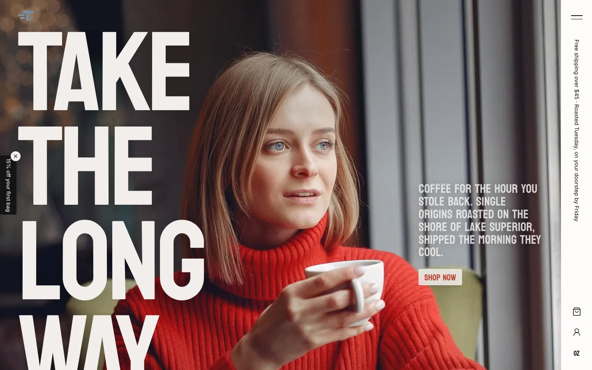
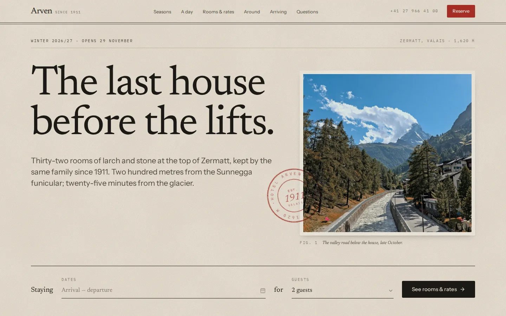

Remix · E-commerce · Hospitality
Side B Coffee — Roastery & Listening Bar
A warm, cream-and-rust site for Side B, a small-batch roaster that pours its coffee in two record bars
Clones it into a folder you pick, as a new project. No Codecaine yet? Get it free
Nothing opened? Codecaine has to be installed and opened once for this link to work. Install Codecaine, or download the project and open its folder.

About
A warm, cream-and-rust site for Side B, a small-batch roaster that pours its coffee in two record bars: a condensed-serif voice on a golden-ratio scale with tight tracking, mono-caps printed-label buttons and soft warm shadows. A hero reel cutting between the roaster and a spinning record, a manifesto that inks itself in as you read, a shelf of SVG coffee bags whose labels come from the data, cards that flood rust on hover, a pinned five-track walk from cherry to cup, a turntable and footer player that genuinely play (synthesised in the browser), a merch shelf, a community board that opens into posts and RSVPs, a wholesale enquiry form and live open/closed hours — plus Shop, Subscribe and Our story pages and a live brand guide.
Designed for
- Coffee roasters, cafés, bakeries and record or listening bars
- Independent food and drink brands selling online and in person
- Story-led shop pages with sticky, scroll-scrubbed sections and working product mockups
- Seeing SVG product mockups, a working cart and a playable audio player built as editor-controllable components
Details
- Version
- 1.0.0
- Updated
- Oct 10, 2026
- Pages
- 5
- Framework
- vite
- Styling
- tailwindcss@4
- Dev port
3420- SDK
@canvas/react 0.1.1- License
- MIT
- Download
- 729 KB · 113 files
Keywords
Every page
5 pages, as they open at 1440px.


More remixes

Truant — Specialty Coffee Roaster
A loud, photograph-led storefront for Truant, a Lake Superior single-origin roaster

Alpine Hotel
Hotel Arven — a one-page guide to a small, family-run hotel at the top of Zermatt, set like a printed hotel guide on warm paper

Aurel
A high-end fashion house's site in bone, ink and burnt orange